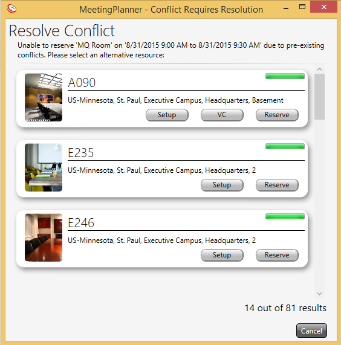

Users are unable to create reservations that conflict; MeetingPlanner will return alternate available rooms at the desired time/date when a conflict occurs.

Important: If a conflict occurs and a user selects cancel instead of an alternate room from the ‘Resolve Conflict’ window, the meeting time and date will be saved without a room.